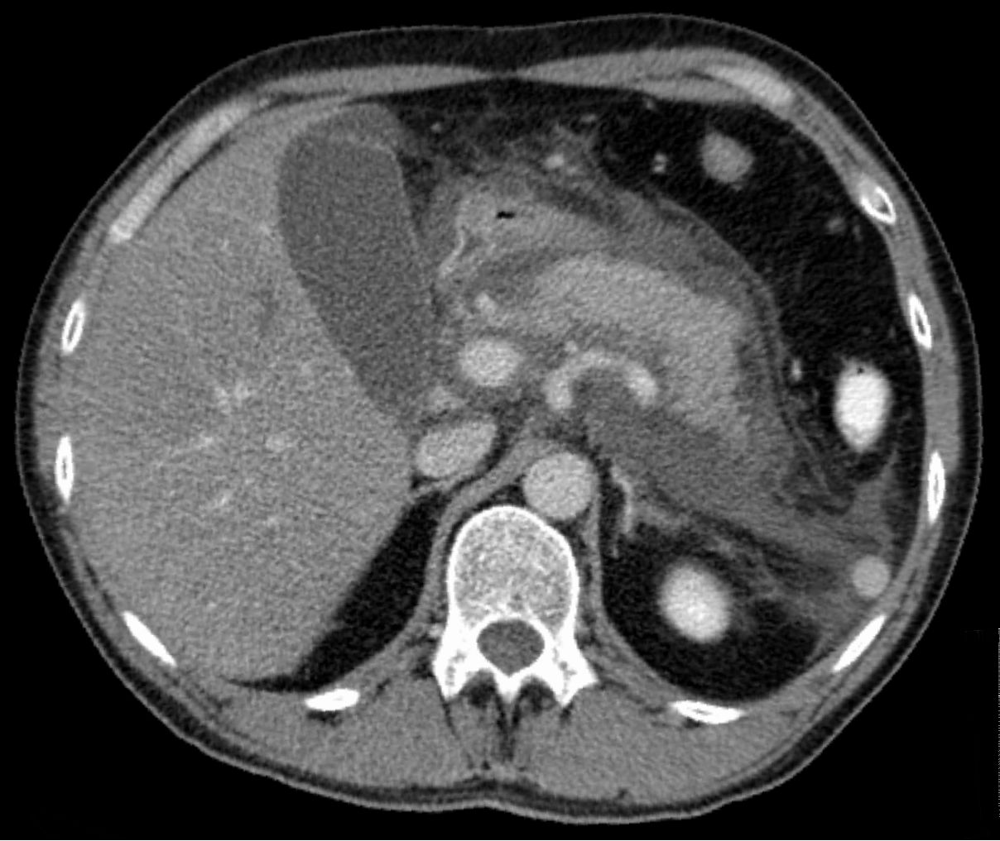

Ficha del catálogo
Pancreatitis aguda
- Sistema
- Digestivo
- Modalidad
- TC
- Región
- Páncreas y retroperitoneo
- Dificultad
- Intermedio
Es la inflamación aguda del páncreas por activación intraglandular de las enzimas digestivas, con litiasis biliar y alcohol como causas principales. El diagnóstico es clínico y bioquímico, por lo que la imagen no se requiere para confirmarlo en el episodio típico. El papel de la imagen es identificar la causa, valorar la necrosis y detectar complicaciones.
Técnica
La tomografía con medio de contraste intravenoso es el estudio de elección para la valoración de la gravedad. Idealmente se realiza después de las 72 horas del inicio del cuadro, porque antes la necrosis todavía no se delimita y el estudio puede subestimar la extensión. Se emplean cortes finos con fase pancreática y fase portal, y se administra agua como contraste neutro oral cuando el paciente lo tolera.
Qué observar
- Aumento difuso o focal del tamaño glandular con bordes mal definidos
- Trabeculación de la grasa peripancreática y engrosamiento de la fascia pararrenal anterior
- Áreas del parénquima que no realzan tras el contraste, indicativas de necrosis
- Colecciones peripancreáticas, su contenido, sus paredes y su grado de encapsulación
- Litiasis biliar, dilatación del colédoco y calcificaciones que sugieran cronicidad
- Complicaciones vasculares como trombosis de la vena esplénica o pseudoaneurisma
Hallazgos
En la forma intersticial edematosa el páncreas se ve aumentado, con realce homogéneo aunque algo disminuido y con líquido peripancreático. En la forma necrotizante aparecen zonas sin realce en el parénquima, en la grasa peripancreática o en ambas, con colecciones heterogéneas que contienen material sólido. La presencia de gas dentro de una colección, sin instrumentación previa, sugiere infección. La trombosis venosa esplénica y los pseudoaneurismas de la arteria esplénica son complicaciones vasculares que deben buscarse de forma dirigida.
Perlas
Una tomografía realizada en las primeras 24 a 48 horas puede parecer casi normal en un paciente que después desarrollará necrosis extensa, por lo que un estudio precoz tranquilizador no debe usarse para predecir el curso. El momento correcto para estadificar la gravedad por imagen es a partir del tercer día, salvo que exista duda diagnóstica o sospecha de perforación o isquemia intestinal.
Diagnóstico diferencial
- Úlcera péptica perforada
- Neumoperitoneo y defecto de la pared gástrica o duodenal, con páncreas de realce conservado.
- Isquemia mesentérica
- Defecto de llenado arterial o venoso, neumatosis y ausencia de realce de la pared intestinal.
- Pancreatitis autoinmune
- Páncreas en salchicha con halo periférico hipodenso y sin trabeculación grasa intensa, en curso subagudo.
- Adenocarcinoma pancreático con pancreatitis obstructiva
- Masa hipovascular focal con dilatación ductal y atrofia distal que persiste tras resolver el episodio.
- Pancreatitis crónica agudizada
- Calcificaciones parenquimatosas, litos intraductales y atrofia glandular previa.
Simuladores
- Páncreas de aspecto lobulado o graso en el paciente de edad avanzada
- Líquido peripancreático por ascitis de otra causa o por hidratación intensa
- Colección tabicada crónica confundida con neoplasia quística mucinosa
Por modalidad
- TC
- Es el método principal para valorar necrosis, colecciones y complicaciones vasculares, y para guiar drenajes
- US
- Útil en la fase inicial para identificar litiasis biliar como causa y para el seguimiento de colecciones superficiales
- RM
- Caracteriza mejor el contenido sólido dentro de una colección y evalúa la integridad del conducto pancreático con colangiorresonancia
Protocolo
Tomografía con cortes de 1 a 3 mm, fase pancreática a los 40 a 50 segundos y fase portal a los 70 a 80 segundos tras el medio de contraste intravenoso, con reconstrucciones coronales y sagitales. Se usa agua como contraste oral neutro y se evita el contraste positivo que oscurece la evaluación del realce glandular. Si existe daño renal se prefiere resonancia con secuencias T2 y difusión.
Clasificación
La clasificación de Atlanta revisada distingue dos tipos morfológicos y cuatro tipos de colecciones. La pancreatitis intersticial edematosa produce colección líquida peripancreática aguda en las primeras cuatro semanas y pseudoquiste después de las cuatro semanas. La pancreatitis necrotizante produce colección necrótica aguda antes de las cuatro semanas y necrosis encapsulada, o walled-off necrosis, después. En cuanto a gravedad clínica, se considera leve sin falla orgánica ni complicaciones locales, moderadamente grave con falla orgánica transitoria menor de 48 horas o complicaciones locales, y grave con falla orgánica persistente. El índice de gravedad tomográfico combina los hallazgos inflamatorios con el porcentaje de necrosis glandular.
Errores frecuentes
- Estadificar la gravedad con una tomografía demasiado precoz y subestimar la necrosis
- Llamar pseudoquiste a toda colección, cuando la necrosis encapsulada contiene material sólido y requiere manejo distinto
- Atribuir el gas de una colección siempre a infección, sin revisar si hubo drenaje o comunicación con el tubo digestivo

pancreatitis Atlanta necrosis pancreatica pseudoquiste tomografia abdomen agudo pancreas